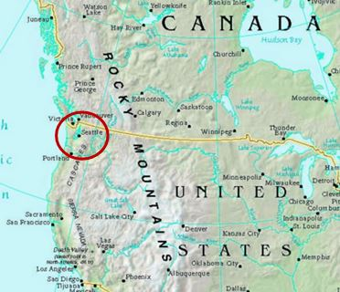
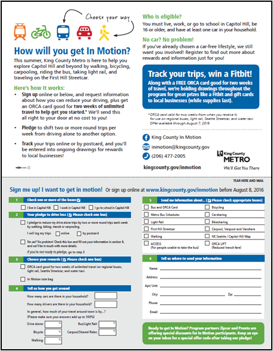
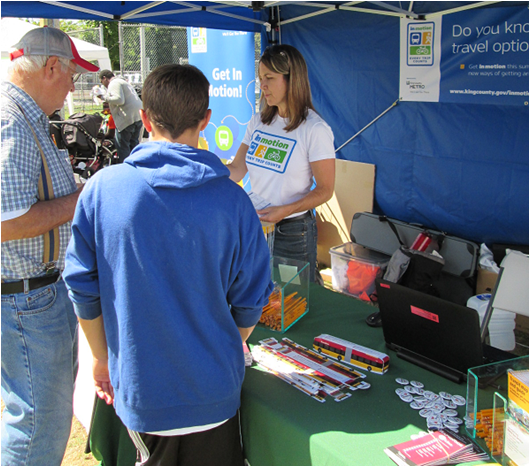
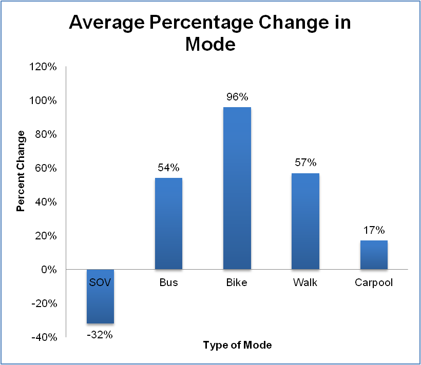
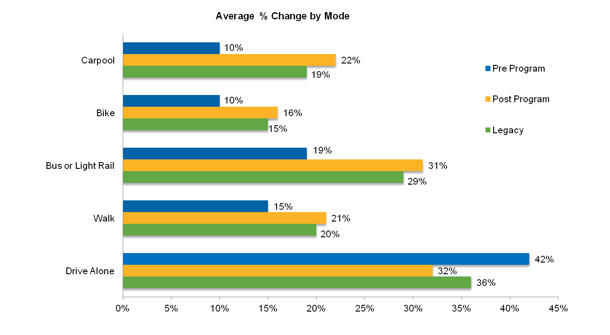
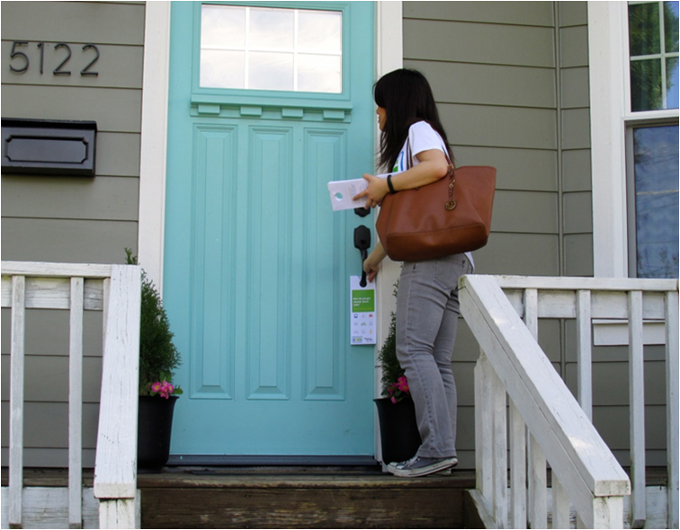

King County In Motion
In Motion participants pledge to shift two drive-alone trips per week to transit, ridesharing, biking or walking. The program uses motivational interviewing, commitments, rewards, engaging materials and norm appeals tailored to each target community. It has been called into action during or in anticipation of major construction, transit restructures or new transit service such as light rail or bus rapid transit. Since creating In Motion in 2004, King County Metro Transit has applied a growing toolkit of community-based social marketing techniques to persuade about 23,000 Seattle-area travelers to drive less. Designated a Landmark case study in 2015. Access the 4.5 minute You Tube video summary using the link near the bottom of the left hand taupe-colored column.
Background
Note: To minimize site maintenance costs, all case studies on this site are written in the past tense, even if they are ongoing as is the case with this particular program.
For many years, Metro Transit had offered programs aimed at reducing drive-alone traffic, and increasing ridership, for daily commuters. This focus was, in part, due to the State of Washington's Commute Trip Reduction law, passed in 1991, which called on employers to encourage employees to drive alone less often.
"We began looking at the data and saw that 80% of trips were non-work trips," said Sunny Knott, a transportation planner with King County's Department of Transportation. She explained that the County would not meet its goals if they continued to focus solely on commute trips. "We wanted to create a program that would focus on other, non-work trips. In Motion became that program."

Map courtesy of Mapcruzin.com
Setting Objectives
The program was designed to reduce drive alone travel among participants.
Getting Informed
To understand neighborhood needs, King County Metro Transit researched, identified and interviewed local stakeholders and business leaders in each of its targeted neighbourhoods.
In each community, a guided group discussion with residents and community leaders helped the organizers to:
- Learn how best to reach the community
- Understand their concerns and suggestions for the program
- Solicit partners for the program
- Identify specific motivations, barriers and benefits to using alternative modes of transportation
- Identify the best communication channels to reach members of the community
This research helped them understand some of the most common barriers, including a real and perceived lack of travel choices, inconvenience, safety, geography (e.g., hills for cyclists / pedestrians), or cultural norms, and helped identify the most promising messaging for each neighborhood.
"We targeted areas where people identified as belonging," said Knott. “We wanted areas with a good sense of community and an available travel network."
Certain neighborhoods were targeted if changes to transit services or major construction projects, which would impact travel, were planned for those areas.
"Large construction projects really impact people's travel behaviour, so that's a good moment to reach out to them and ask them to change," said Knott.
Once neighborhoods were identified and stakeholders consulted, the program was then customized for each project area. Local partners indicated what services or support they could offer; incentives, prompts and rewards were identified; and the program’s messages were tailored to fit the audience.

Delivering the Program
Each neighborhood In Motion program lasted between 10 and 16 weeks. Direct mail communications were first sent to each household in the neighborhood (populations ranged from 5,000 to 10,000 households). The mailer included messages specific to the neighborhood, a neighborhood map, and a sign-up card that participants could mail back. They also had the option to sign up online.

The maps showed local transit routes how long it took to walk from the neighborhood to surrounding locations. This helped overcome misconceptions about how long it would take to walk and take transit to these places. (Vivid, Personalized, Credible, Empowering Communication)

"The mailer is where we asked them to make their pledge to drive less," Knott explained. Participants were asked to reduce two of their vehicle trips per week. (Obtaining a Commitment) Participants could also request additional information be sent to them, such as transit or cycling information.
Once participants pledged they were asked baseline information about their current travel behaviour and what modes of travel they used most regularly (pre-program survey).

Participants logged their trips by postcard or online. "We still offer a paper version for people because this was really important in certain communities," said Knott. (Overcoming Specific Barriers)
The program was supported by local businesses with posters and window slicks and other information materials that helped local leaders promote the program. In neighborhoods with mostly single family homes, participants were given yard signs to display their commitment to the program. (Norm Appeals, Obtaining a Commitment, Prompts, Word of Mouth)


Local business posters
In Motion staff also participated in many community events to meet face-to-face with residents and let them know about the program. "We participate at a lot of local farmers' markets but we've also set up tables at libraries and grocery stores," said Knott. "It all depends on where that community's gathering spaces are."

Rentin In Motion outreach event
Rewards and incentives were offered for those who participated. The most popular was the ORCA transit card (smart card), pre-loaded with two weeks of unlimited travel. (Incentives)
In Motion encouraged participants to continue with their travel changes through weekly email bulletins. (Feedback, Building Motivation Over Time) At the end of the program, participants were asked the same travel questions as when they pledged, as well as additional questions about their impressions of the program (post-program survey).
Financing the Program
Metro Transit budgeted $25/household in each of the target areas. Target areas ranged in size from 5,000 to 10,000 households.
Measuring Achievements
The program used four key ways to measure program impacts:
- Pre and post Surveys. At the start and end of the program, participants were surveyed about their travel habits. The post-program survey also asked about changes in mode use, barriers and motivators to participate.
- Trip Tracking. Participants logged trips by mode and day. This reinforced their behavior changes and provided information for tracking personal and program progress in reducing car trips, vehicle miles, CO2, and fuel.
- Legacy Survey -To assess sustained changes in travel behavior, the program re-surveyed participants from two programs about 18 months after the programs ended.
- Transit Data – Participants received pre-loaded transit cards, which enabled program managers to directly collect aggregate program data on participant transit boardings, fare re-loading value, and whether the rider had added a pass. Baseline information was not available for data collected this way.

Results
A comparison of pre- and post- survey data showed significant reductions in drive alone travel among participants.
Participant Level
On average, during the 12 week program each participant:
- Reduced 10.7 car trips relative to the original project baseline
- Reduced 151 vehicle miles traveled
- Saved 7.5 gallons of gas
- Helped avoid 143 lbs. of CO2 from being released into the atmosphere

During the 12 week sampling period that began 18 months after the intervention, on average each participant:
- Reduced 6.4 car trips, relative to the original project baseline
- Reduced 90.6 vehicle miles traveled
- Saved 4.5 gallons of gas during a program
- Helped avoid 86 lbs. of CO2 from being released into the atmosphere during a program
On an annual basis, during the first year and half of the program, on average each participant therefore:
- Reduced between 28 and 46 car trips, relative to the original project baseline
- Reduced between 392 and 654 vehicle miles traveled
- Saved between 19 and 32 gallons of gas during a program
- Helped avoid between 372 and 621lbs. of CO2 from being released into the atmosphere during a program

According to the legacy survey, there was a sustained decrease in drive-alone rates and a sustained increase in other modes of transportation, with some changes persisting a year and a half after the program ended.
The legacy survey results were really powerful for program management, who had already seen the pre- and post- survey data. Considering that most people can’t remember answers they made 18 months beforehand, it was sstriking to see them continuing to report that they drove less than they had before In Motion.
In addition, roughly half of participants did not previously have a transit fare card (ORCA card), which has increased on-going transit use among previous non-transit users, especially for non-work trips. Based on ridership analysis, approximately 24% of the promotional ORCA cards continue to be used after the campaign ends.
Overall Impact
Population size of the program’s audience: 19,814 participants (10% of target households)
By the summer of 2015, In Motion participants had:
- Reduced between 555,000 and 911,000 car trips, relative to the original project baseline
- Reduced between 7.8 and 13 million vehicle miles traveled (13-21 million km)
In Motion’s strategies also helped remove vehicles from the road and manage traffic congestion and infrastructure costs. For example, King County Metro Transit used In Motion to mitigate traffic impacts during major highway construction; the program was also used to educate residents about major changes in transit service, including when transit service was added, reduced or restructured, to help people find alternatives to driving.
In Motion also raised awareness that the vast majority of trips were non-work trips and for less than three miles. This knowledge helped motivate program participants to adopt active transportation choices for short personal trips, such as errands and school trips.
Contacts
Ms. Sunny Knott
Senior Transportation Planner, Department of Transportation
King County, Washington, USA
sunny.knott@kingcounty.gov 206-477-5812
http://www.kingcounty.gov/inmotion
Notes
Program Planning and Evaluation Toolkit
A program planning and evaluation toolkit is available at kingcounty.gov/depts/transportation/metro/programs-projects/in-motion/toolkit.aspx
Lessons Learned
- Know your audience: In Motion customized its messages for each neighborhood and offered tools for the tech and social media-savvy markets, while also attending to issues of social equity, including cultural and language barriers. Knott explained, for example, how paper mailers and postcards continued to be used because it was important to certain communities.
- Establish beneficial and realistic partnerships: In Motion partnered with many different organizations that had similar goals, including public health agencies, other departments of transportation, active transportation organizations, schools, employers, and neighborhood groups. "Some of our partnerships with small non-profits were also very successful," said Knott. "They don't have a lot of capacity but they helped with getting messages out through their own communication channels. It met their need to get out to the community and it also met our goals."
- Know when to ask for help: Metro Transit did not have enough employees to fully staff In Motion and hired consultants during project implementation. "They bring different perspectives to our campaigns," said Knott. "This helps push us along and gets us to try new things." Knott pointed to one neighborhood that had a significant proportion of Spanish speakers. "We worked with a consultant to go beyond translation. We didn’t directly translate the words; we recreated the phrasing and used words that really communicated the message to that audience." (Vivid, Personalized, Credible Communication)
- Take advantage of change moments: In Motion was used during major construction projects and transit services changes to mitigate the impact on commuters. "Those are good times to ask people to change," said Knott. "They have a good reason to consider making a change because of the impact of the construction that's going on."

In Motion went door-to-door with motivational interviewing
- Keep evolving. In Motion evolved, adding or expanding its tools to include direct motivational interviewing, translated materials, and geo-based social media. As a result, In Motion continued to be effective across a wide range of communities: urban, suburban and rural; transit-rich or with limited access; neighborhoods with mostly single-family homes or multi-family units; and with participants who were from diverse incomes, cultures and languages.
Designation
Designation as a Landmark (best practice) case study through our peer selection process recognizes programs and social marketing approaches considered to be among the most successful in the world. They are nominated both by our peer-selection panels and by Tools of Change staff, and are then scored by the selection panels based on impact, innovation, replicability and adaptability.
The panel that designated this program consisted of:
- Jacky Kennedy, Green Communities Canada
- Ryan Lanyon, City of Toronto
- Nathalie Lapointe, Federation of Canadian Municipalities
- Patricia Lucy, Translink
- David Levinger, Mobility Education Foundation
- Geoff Noxon, Noxon Associates
- Chuck Wilsker, U.S. Telework Coalition
- Phil Winters, CUTR and the University of South Florida
This case study ws written in 2019 by Jay Kassirer and Sharon Boddy.